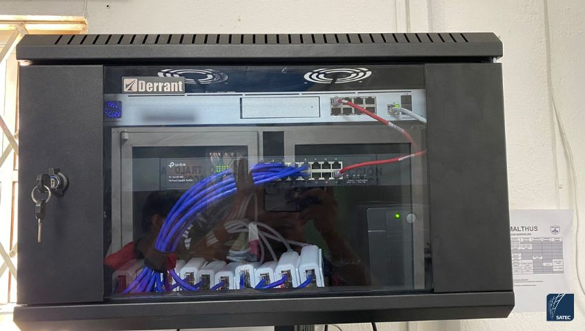
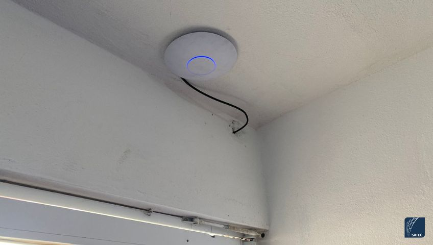
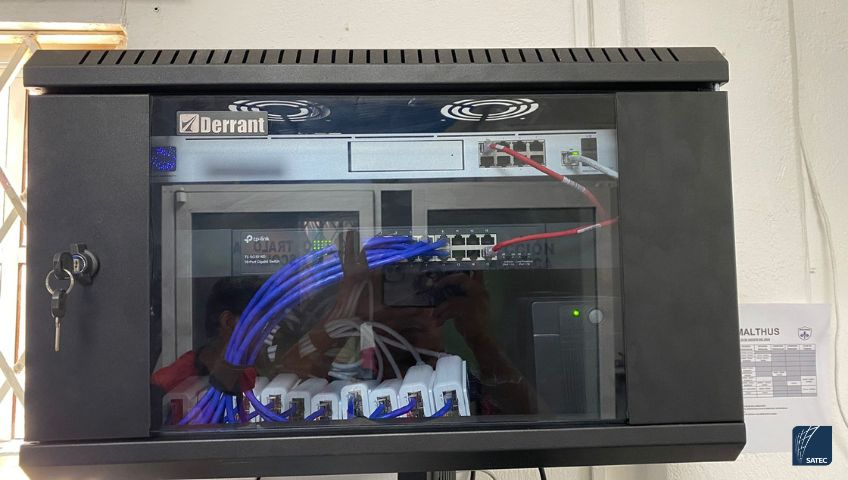
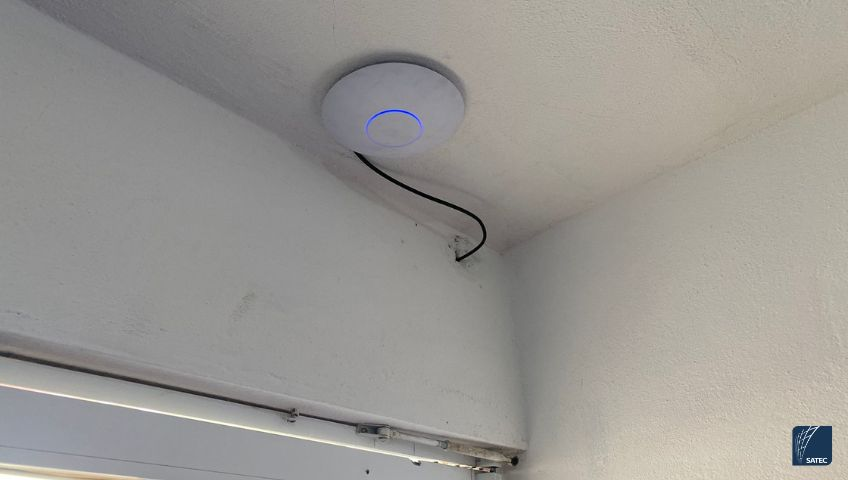

Se realizó el diseño e implementación de una infraestructura de red de alto rendimiento en una institución educativa, con el objetivo de proporcionar conectividad WiFi segura, estable y escalable para alumnos y docentes. Este proyecto incluyó cableado estructurado, segmentación de red y configuración avanzada de seguridad.
Actividades realizadas
- Diseño de la topología de red para optimizar la cobertura y capacidad.
- Implementación de cableado estructurado estratégico para puntos de acceso.
- Instalación y configuración de Access Points para cobertura total en el plantel.
- Configuración centralizada de la red mediante UniFi Dream Machine Pro.
- Segmentación de red utilizando VLANs para mejorar seguridad y rendimiento.
- Optimización del tráfico y estabilidad para múltiples usuarios simultáneos.
Arquitectura y seguridad de red
- Creación de dos redes WiFi independientes: una para alumnos y otra para docentes.
- Implementación de firewall y políticas de seguridad.
- Control de acceso y filtrado de contenido en la red de alumnos.
- Red de docentes con acceso completo a recursos educativos.
- Administración centralizada para facilitar monitoreo y mantenimiento.
Tecnologías y soluciones
- UniFi Dream Machine Pro.
- Redes inalámbricas empresariales.
- Segmentación de red con VLANs.
- Firewall y control de contenido.
- Infraestructura preparada para crecimiento futuro.
Resultados obtenidos
- Cobertura WiFi estable en toda la institución.
- Mejora en la seguridad de la red.
- Control del tráfico y acceso a contenido.
- Alta capacidad para múltiples dispositivos.
- Solución escalable y fácil de administrar.
Este proyecto fue desarrollado como parte de un equipo de ingeniería especializado en redes, asegurando calidad, seguridad y rendimiento en entornos educativos.
Si deseas una solución similar para tu escuela, empresa u organización, puedo ayudarte a diseñar una infraestructura de red segura y profesional adaptada a tus necesidades.
Galería del proyecto
 


